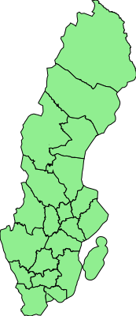

Guile shapefile attempts to read and parse shapefile. As a library, it doesn’t attempt do anything with them (however, See Examples)
It currently doesn’t support writing back to disk.
| • Shapefile | ||
| • Other | ||
| • Examples | ||
| • Contributing and To-Do | ||
| • Index |